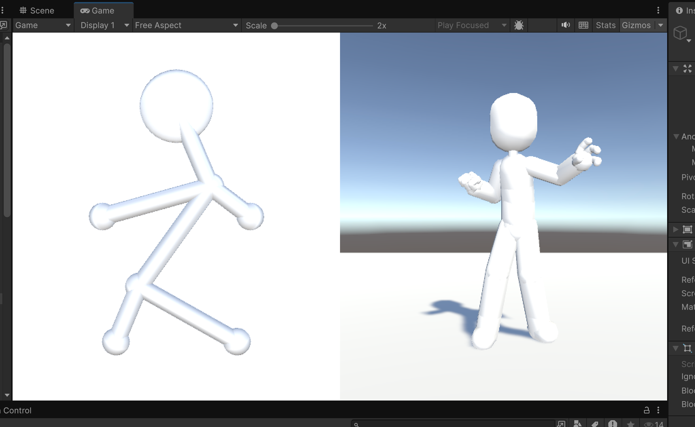

Meshman Milestone Webpage
Names: Catherine Jin, Edward Lee, Ethan Zhang, Ray Zhang
Link to webpage: https://yq-jin.github.io/meshmanwebpage/
Link to Milestone Video: https://drive.google.com/file/d/1IGZi0-MQ2_kVPGcl-PYhTFuuDpCCAGcM/view?usp=sharing
Link to Presentation Slides: https://yq-jin.github.io/meshmanwebpage/milestone/milestone.html
What We Have Accomplished
In the last two weeks of hard work, we have created both 2D and 3D stickman models in Unity. We have successfully implemented individual manipulation capabilities for each model, allowing us to control and animate them separately. However, we are still working on establishing the connection between the 2D and 3D models, where manipulations made to the 2D stickman would directly translate to corresponding movements in the 3D model.Preliminary Results
We did blah blah insert pictures
|

|
Progress (Relative to Plan)
According to our proposal, this was our plan for the first two week!Week 1: 2D UI
- Create the drawing and 2D manipulation UI
- Create stickman in UI
- Implement mouse interaction for positioning stickman
Week 2: 3D Mesh Rendering Software
- Select rendering framework: Unity or OpenGL/C++
- Create basic scene for the mesh man
- Import test meshes to visualize our final result
As expected, projects often don't go as planned. We ended up almost merging the tasks from week 1 and week 2, while first generating the 3D mesh. After selecting Unity for our rendering framework, we went ahead to create a simple 3D .fbx file of a stickman to help visualize what the final result will look like. Next, we rigged the stickman to move different parts of the body with mouse input, putting him in different positions. After that, we moved onto the 2D UI to replace the current stickman control system.
Updated Schedule
update this